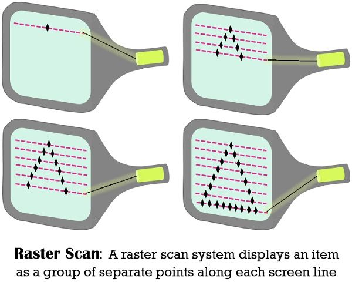
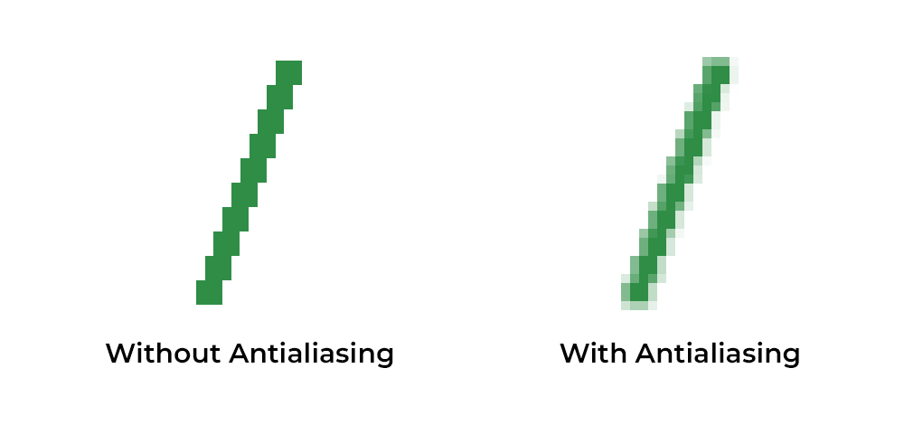

02 - Formación de imagen y representación digital
Visualización gráfica para IA
2026-01-19
Definición de imagen
Definición 2: Una imagen es una función \(f\), que asigna un valor a cada punto de un espacio bidimensional.
Sea $ f(x, y) $ una función de dos variables:
- $ x $ y $ y $ son las coordenadas espaciales de un píxel en la imagen.
- $ f(x, y) $ es el valor de intensidad o color en ese punto.
- $ x $ y $ y $ son las coordenadas espaciales de un píxel en la imagen.
En una imagen analógica (como una pintura), la función $ f(x, y)$ es continua. Cada punto tiene un valor definido en un espacio continuo.
En una imagen digital, $ f(x, y) $ es discreta porque la imagen se divide en una cuadrícula de píxeles. Las coordenadas $ x, y $ y los valores $ f(x, y) $ solo existen en puntos discretos.

Imagen de natural-resources.canada.ca
Para imágenes a color, \(f(x, y)\) es un vector que contiene tres valores, uno para cada componente del modelo de color (generalmente RGB):
\[ f(x, y) = \begin{bmatrix} R \\ G \\ B \end{bmatrix} \]
Donde \(R, G, B\) son las intensidades de los colores rojo, verde y azul, típicamente en el rango \([0, 255]\).
Esta representación vectorial es lo que justifica la notación \(f: \mathbb{R}^2 \to \mathbb{R}^3\).

Imagen de reddit.com
Gráficas de ráster
El término “ráster” se refiere técnicamente al mecanismo usado en los antiguos monitores de tubo de rayos catódicos: un haz de electrones se movía a lo largo de las filas de píxeles, haciéndolos brillar.
Este haz era desviado por potentes imanes, lo que controlaba el brillo de los píxeles modulando la intensidad del haz de electrones.
Los valores de color almacenados en el buffer de cuadro determinaban la intensidad del haz. (En una pantalla a color, cada píxel tenía un punto rojo, uno verde y uno azul, que eran iluminados por separado por el haz.)

Imagen de techdifferences.com

Gráficas de ráster - Actualidad
Un monitor moderno de pantalla plana no utiliza un ráster en el mismo sentido. No hay un haz de electrones móvil. El mecanismo que controla los colores de los píxeles varía según el tipo de pantalla.
Sin embargo, la pantalla sigue estando compuesta de píxeles, y los valores de color de todos los píxeles aún se almacenan en un buffer de cuadro.
La idea de una imagen compuesta por una cuadrícula de píxeles, con valores numéricos de color para cada píxel, define a las gráficas de ráster.

Imagen de nodinx.com
Pintar con pixeles vs. dibujar con vectores
- Programas de pintura: Representan imágenes como una cuadrícula de píxeles. El usuario pinta asignando colores a píxeles individuales. Ejemplo: Adobe Photoshop.
- Programas de dibujo: Representan imágenes como una lista de formas geométricas. Las formas se pueden mover, escalar y editar independientemente. Ejemplo: Adobe Illustrator.

Vectorial vs Ráster
Imagen de ratermanis.com
Video explicativo - Bresenham

- El antialiasing es una técnica que busca reducir el efecto del aliasing aplicando algún tipo de suavizado o difuminado sobre la imagen. Existen dos enfoques principales en los algoritmos de renderizado:
- Algoritmos analíticos: aplican un prefiltrado a la imagen antes de muestrearla, eliminando las frecuencias altas que causan aliasing. Se basan en principios matemáticos como la transformada de Fourier, que permite identificar y reducir los componentes de alta frecuencia. E.g. Supersampling Antialiasing (SSAA).
- Algoritmos discretos: la imagen se genera directamente en puntos de muestreo regulares (píxeles), sin una función continua previa. Son más simples y fáciles de implementar, pero más propensos al aliasing. E.g. Multisampling Antialiasing (MSAA).
- Algoritmos analíticos: aplican un prefiltrado a la imagen antes de muestrearla, eliminando las frecuencias altas que causan aliasing. Se basan en principios matemáticos como la transformada de Fourier, que permite identificar y reducir los componentes de alta frecuencia. E.g. Supersampling Antialiasing (SSAA).


Imágenes de electronicshub.org y geeksforgeeks.org